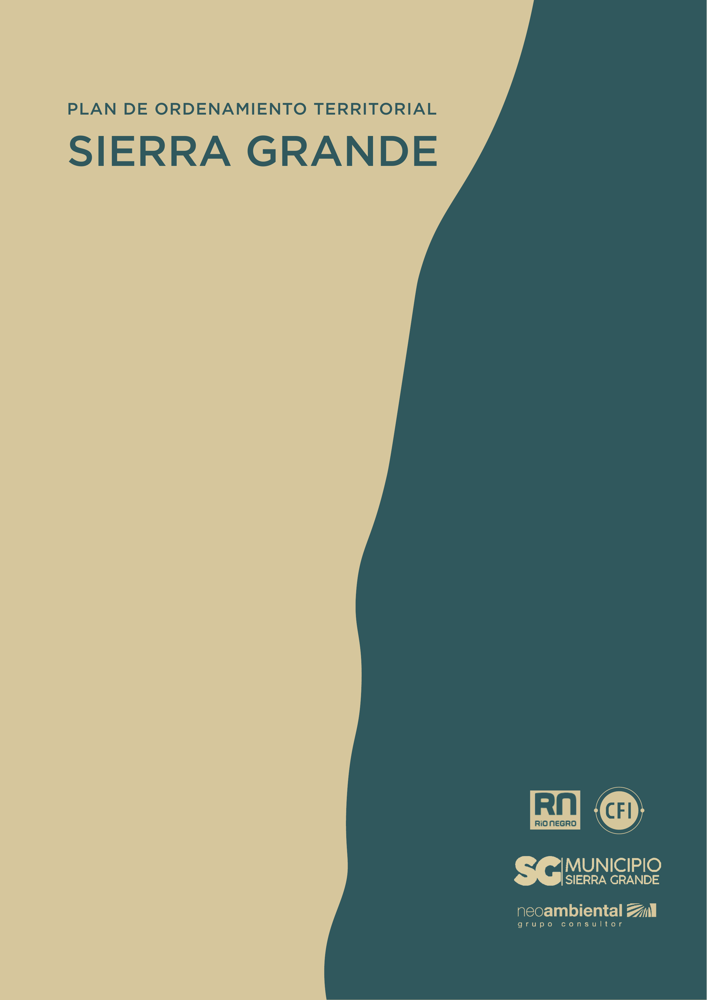

Este es el documento final del POT, una herramienta para planificar el futuro de la localidad. Fue construido con la participación de toda la comunidad: vecinos, instituciones y autoridades que sumaron ideas y experiencias.
Aquí podés leerlo o descargarlo, y conocer las propuestas para que Sierra Grande crezca de manera ordenada, cuidando el presente y proyectando el futuro.
